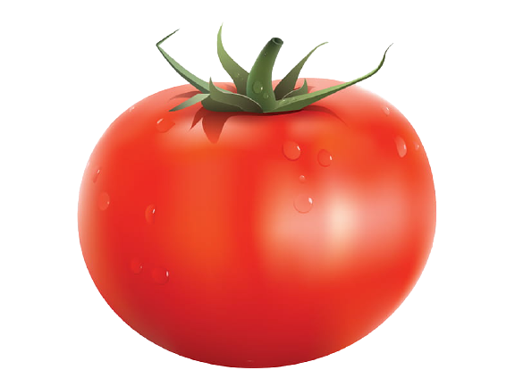
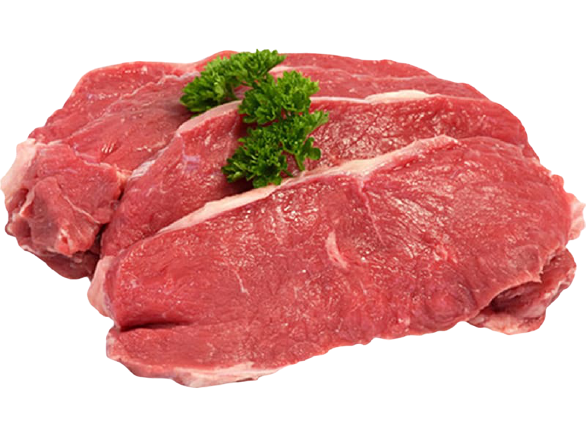

CHEESE
Cheese is a dairy product, derived from milk and produced in wide ranges of flavours, textures and forms by coagulation of the milk protein casein.
LETTUCE
Lettuce (Lactuca sativa) is an annual plant of the daisy family, Asteraceae. It is most often grown as a leaf vegetable, but sometimes for its stem and seeds.
TOMATO

The tomato is the edible, often red berry of the plant Solanum lycopersicum, commonly known as a tomato plant. The species originated in western South America and Central America.
BEEF

Beef is the culinary name for meat from cattle, particularly skeletal muscle. Humans have been eating beef since prehistoric times. Beef is a source of protein and nutrients.